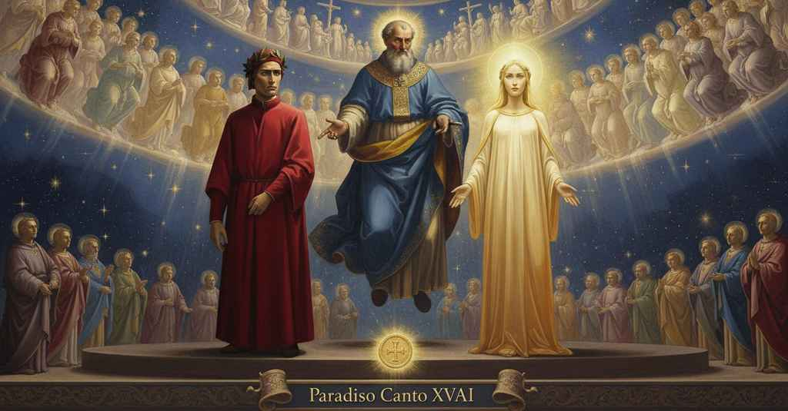

Paradiso — Canto 24

Beatrice affida Dante a san Pietro per l’esame sulla fede; il poeta ne definisce natura, fondamento e contenuto, professando Dio uno e trino, e l’apostolo, soddisfatto, lo approva, lo benedice e danza intorno a lui. Beatrice entrusts Dante to Saint Peter for an examination on faith; the poet defines its nature, foundation, and content, professing one and triune God, and the apostle, satisfied, approves, blesses, and dances around him. ベアトリーチェは信仰の試問のためダンテを聖ペテロに委ね、詩人はその本質、根拠、内容を定義して唯一にして三位一体の神を告白し、満足した使徒は彼を認め、祝福し、その周りで踊る。
1
«O sodalizio eletto a la gran cena
“O chosen fellowship at the great supper
「おお、大いなる晩餐に選ばれし仲間たちよ、
2
del benedetto Agnello, il qual vi ciba
of the blessed Lamb, who so feeds you
祝福されし小羊の、そは汝らを養い、
3
sì, che la vostra voglia è sempre piena,
that your desire is always full,
その結果、汝らの望みは常に満たされる。
4
se per grazia di Dio questi preliba
if by the grace of God this man foretastes
もし神の恩寵によりこの者が先んじて味わうなら
5
di quel che cade de la vostra mensa,
of that which falls from your table,
汝らの食卓からこぼれ落ちるものを、
6
prima che morte tempo li prescriba,
before death prescribes his time,
死がその時を定める前に、
7
ponete mente a l’affezione immensa
give heed to his immense affection
その測り知れぬ渇望に心を向け
8
e roratelo alquanto: voi bevete
and bedew him somewhat: you drink
彼をいくらか潤したまえ。汝らは飲むのだから
9
sempre del fonte onde vien quel ch’ei pensa».
always from the fount whence comes what he thinks.”
彼が思うことの源である泉から常に」。
10
Così Beatrice; e quelle anime liete
Thus Beatrice; and those happy souls
かくベアトリーチェは語り、かの喜びに満ちた魂たちは
11
si fero spere sopra fissi poli,
made themselves spheres upon fixed poles,
定まりし極の上で天球となり、
12
fiammando, a volte, a guisa di comete.
flaming, at times, in the guise of comets.
燃え盛り、時には、彗星のように。
13
E come cerchi in tempra d’orïuoli
And as circles in the works of clocks
そして時計の仕組みにある輪のように
14
si giran sì, che ’l primo a chi pon mente
so turn that the first, to one who heeds,
それらは回り、心して見る者には最初の輪は
15
quïeto pare, e l’ultimo che voli;
seems still, and the last to fly;
静止して見え、最後の輪は飛ぶがごとく見える。
16
così quelle carole, differente-
so did those carols, different-
そのように、かの輪舞は、様々に
17
mente danzando, de la sua ricchezza
ly dancing, of their richness
踊りながら、その豊かさを
18
mi facieno stimar, veloci e lente.
make me estimate, swift and slow.
私に推し量らせた、速く、そして遅く。
19
Di quella ch’io notai di più carezza
From the one that I noted of most dearness
私が最も優美だと認めたものから
20
vid’ ïo uscire un foco sì felice,
I saw a fire so happy issue forth,
私はかくも幸いなる炎が出るのを見た、
21
che nullo vi lasciò di più chiarezza;
that it left none there of greater brightness;
そこにはそれ以上の輝きを持つものは残らなかった。
22
e tre fïate intorno di Beatrice
and three times around Beatrice
そして三度ベアトリーチェの周りを
23
si volse con un canto tanto divo,
it turned with a song so divine,
それは回り、かくも神々しい歌とともに、
24
che la mia fantasia nol mi ridice.
that my fantasy does not repeat it to me.
私の想像力はそれを私に語り直せない。
25
Però salta la penna e non lo scrivo:
Therefore the pen leaps and I do not write it:
それゆえペンは跳び、私はそれを書かない。
26
ché l’imagine nostra a cotai pieghe,
for our imagination for such folds,
なぜなら我々の想像はかかる襞に対して、
27
non che ’l parlare, è troppo color vivo.
let alone our speech, is too coarse a hue.
言葉はもとより、あまりに強い色彩だからだ。
28
«O santa suora mia che sì ne prieghe
“O my holy sister who so entreats us
「おお、かくも我らに祈り給う我が聖なる妹よ、
29
divota, per lo tuo ardente affetto
devoutly, by your ardent affection
敬虔に、その燃えるような情愛によって
30
da quella bella spera mi disleghe».
you unloose me from that beautiful sphere.”
かの美しい天球から私を解き放つ」。
31
Poscia fermato, il foco benedetto
After stopping, the blessed fire
やがて止まり、祝福された炎は
32
a la mia donna dirizzò lo spiro,
directed its breath to my lady,
我が貴婦人へその息を向け、
33
che favellò così com’ i’ ho detto.
which spoke as I have said.
それは私が述べたように語った。
34
Ed ella: «O luce etterna del gran viro
And she: “O eternal light of the great man
そして彼女は言った、「おお、偉大な人の永遠の光よ、
35
a cui Nostro Segnor lasciò le chiavi,
to whom Our Lord left the keys,
我らの主が鍵を遺された、
36
ch’ei portò giù, di questo gaudio miro,
which he brought down, of this wondrous joy,
彼が下界に携えた、この驚くべき喜びの、
37
tenta costui di punti lievi e gravi,
test this man on points light and grave,
この者を試したまえ、軽い点も重い点も、
38
come ti piace, intorno de la fede,
as it pleases you, concerning the faith,
汝の好むままに、信仰について、
39
per la qual tu su per lo mare andavi.
by which you once walked upon the sea.
それによって汝は海の上を歩んだのだ。
40
S’elli ama bene e bene spera e crede,
If he loves well and hopes well and believes,
彼がよく愛し、よく望み、信じているかは、
41
non t’è occulto, perché ’l viso hai quivi
is not hidden from you, for you have your sight there
汝には隠されてはいない。なぜなら汝はそこに顔を向けているから
42
dov’ ogne cosa dipinta si vede;
where every thing is seen depicted;
そこでは万物が描かれているのが見える。
43
ma perché questo regno ha fatto civi
but because this kingdom has made citizens
しかし、この王国は市民を作ったのだから
44
per la verace fede, a glorïarla,
by the true faith, to glorify it,
まことの信仰によって、それを栄光あるものとするために、
45
di lei parlare è ben ch’a lui arrivi».
it is good that speech of it should come to him.”
彼がそれについて語るのがよいのです」。
46
Sì come il baccialier s’arma e non parla
As the bachelor student arms himself and does not speak
学士候補生が武装し、語らないように
47
fin che ’l maestro la question propone,
until the master proposes the question,
師が問題を提示するまで、
48
per approvarla, non per terminarla,
to give reasons for it, not to resolve it,
それを論証するためであり、終わらせるためではなく、
49
così m’armava io d’ogne ragione
so did I arm myself with every reason
そのように私はあらゆる理屈で武装した
50
mentre ch’ella dicea, per esser presto
while she was speaking, to be ready
彼女が語る間に、備えるために
51
a tal querente e a tal professione.
for such a questioner and such a profession.
かかる問い手とかかる告白に。
52
«Dì, buon Cristiano, fatti manifesto:
«Say, good Christian, make yourself manifest:
「言え、善きキリスト者よ、自らを明らかにせよ。
53
fede che è?». Ond’ io levai la fronte
what is faith?». At which I raised my brow
信仰とは何か？」。そこで私は額を上げた
54
in quella luce onde spirava questo;
to that light from which this breathed;
この言葉が発せられたその光の中へ。
55
poi mi volsi a Beatrice, ed essa pronte
then I turned to Beatrice, and she made ready
それからベアトリーチェに顔を向けると、彼女はすぐに
56
sembianze femmi perch’ ïo spandessi
signs to me that I should pour forth
私が内なる泉から外へ水を溢れさせるよう
57
l’acqua di fuor del mio interno fonte.
the water from my inner fount.
合図を送ってくれた。
58
«La Grazia che mi dà ch’io mi confessi»,
«May the Grace that grants me to confess,»
「私が告白することを許したもう恩寵が、」
59
comincia’ io, «da l’alto primipilo,
I began, «before the high first-centurion,
私は始めた、「高き百人隊長よ、
60
faccia li miei concetti bene espressi».
make my concepts be well expressed.»
私の概念を良く表現させてくださいますように」。
61
E seguitai: «Come ’l verace stilo
And I continued: «As the truthful stylus
そして続けた。「真実の書体が
62
ne scrisse, padre, del tuo caro frate
wrote of it, father, your dear brother
記したように、父よ、あなたの愛する兄弟が
63
che mise teco Roma nel buon filo,
who with you set Rome on the good path,
あなたと共にローマを正しい道に導いた、
64
fede è sustanza di cose sperate
faith is the substance of things hoped for
信仰とは望まれるものの実体であり
65
e argomento de le non parventi;
and the evidence of things not seen;
見えざるものの論証であります。
66
e questa pare a me sua quiditate».
and this seems to me its quiddity.»
そしてこれこそが、私にはその本質であると思われます」。
67
Allora udi’: «Dirittamente senti,
Then I heard: «You perceive rightly,
すると聞いた。「正しく感じている、
68
se bene intendi perché la ripuose
if you well understand why he placed it
もし汝が、なぜ彼がそれを『実体』のうちに、
69
tra le sustanze, e poi tra li argomenti».
among the substances, and then among the arguments.»
そして次に『論証』のうちに置いたかを良く理解しているなら」。
70
E io appresso: «Le profonde cose
And I then: «The profound things
そして私は続けた。「ここで私にその姿を
71
che mi largiscon qui la lor parvenza,
which here grant me their appearance,
惜しみなく見せてくれる深遠なる事柄は、
72
a li occhi di là giù son sì ascose,
to the eyes down there are so hidden,
下界の眼にはあまりに隠されているため、
73
che l’esser loro v’è in sola credenza,
that their existence is there in belief alone,
その存在は、ただ信ずることの中にのみあり、
74
sopra la qual si fonda l’alta spene;
upon which high hope is founded;
その上にこそ高き望みは築かれるのです。
75
e però di sustanza prende intenza.
and therefore it takes on the meaning of substance.
それゆえに『実体』の意味合いを帯びるのです。
76
E da questa credenza ci convene
And from this belief it is our task
そしてこの信ずることより我々は
77
silogizzar, sanz’ avere altra vista:
to syllogize, without having other sight:
他の視覚なしに、三段論法を立てねばなりません。
78
però intenza d’argomento tene».
therefore it holds the meaning of argument.»
それゆえに『論証』の意味合いを保つのです」。
79
Allora udi’: «Se quantunque s’acquista
Then I heard: «If all that is acquired
すると聞いた。「もし下界で学ばれる
80
giù per dottrina, fosse così ’nteso,
below through doctrine, were so understood,
すべての教義が、このように理解されたなら、
81
non lì avria loco ingegno di sofista».
there would be no place for the sophist’s wit.»
そこにソフィストの才の余地はないだろう」。
82
Così spirò di quello amore acceso;
So breathed from that enkindled love;
その燃える愛から、かく発せられた。
83
indi soggiunse: «Assai bene è trascorsa
then he added: «This coin has been well run through
そして付け加えた。「この貨幣の
84
d’esta moneta già la lega e ’l peso;
for its alloy and its weight already;
合金と重量は、すでに良く吟味された。
85
ma dimmi se tu l’hai ne la tua borsa».
but tell me if you have it in your purse.»
だが言え、汝はそれを財布の中に持っているか」。
86
Ond’ io: «Sì ho, sì lucida e sì tonda,
At which I: «Yes, I have it, so bright and so round,
そこで私。「はい、持っております、あまりに輝き、あまりに丸く、
87
che nel suo conio nulla mi s’inforsa».
that in its stamp nothing makes me doubt.»
その鋳貨に、私はいささかも疑いを抱きません」。
88
Appresso uscì de la luce profonda
Next there came from the deep light
次に、その深き光から発せられた
89
che lì splendeva: «Questa cara gioia
that was shining there: «This precious jewel
そこに輝く光から、「この尊き喜びは、
90
sopra la quale ogne virtù si fonda,
upon which every virtue is founded,
その上にあらゆる徳が築かれるが、
91
onde ti venne?». E io: «La larga ploia
from where did it come to you?». And I: «The ample rain
汝にはどこから来たのか？」。そして私。「聖霊の
92
de lo Spirito Santo, ch’è diffusa
of the Holy Spirit, which is poured out
豊かなる雨は、それは旧きと新しき
93
in su le vecchie e ’n su le nuove cuoia,
upon the old and upon the new parchments,
皮紙の上に広げられていますが、
94
è silogismo che la m’ha conchiusa
is a syllogism that has so concluded it for me
それが私に信仰を結論づけた三段論法であり、
95
acutamente sì, che ’nverso d’ella
so sharply, that compared to it
あまりに鋭く、それに対しては
96
ogne dimostrazion mi pare ottusa».
every other demonstration seems obtuse.»
あらゆる証明が鈍く思われるほどです」。
97
Io udi’ poi: «L’antica e la novella
I heard then: «The old and the new
私は次に聞いた。「汝にかくも結論づけた
98
proposizion che così ti conchiude,
proposition that so concludes for you,
その旧きと新しき命題を、
99
perché l’hai tu per divina favella?».
why do you hold it for divine speech?».
なぜ汝は神の言葉として持つのか？」。
100
E io: «La prova che ’l ver mi dischiude,
And I: «The proof that discloses the truth to me,
そして私。「真実を私に開示するその証拠は、
101
son l’opere seguite, a che natura
are the works that followed, for which nature
それに続いた業（わざ）であります、それには自然は
102
non scalda ferro mai né batte incude».
never heats iron nor strikes an anvil.»
決して鉄を熱しもせず、金床を打ちもしません」。
103
Risposto fummi: «Dì, chi t’assicura
The reply was to me: «Say, who assures you
私に返答があった。「言え、誰が汝に保証するのだ、
104
che quell’ opere fosser? Quel medesmo
that those works existed? The very same thing
それらの業があったと？それを証明しようとする
105
che vuol provarsi, non altri, il ti giura».
that wants to be proved, and no other, attests it to you.»
まさにそのものが、他ならぬ、汝にそれを誓っているのだぞ」。
106
«Se ’l mondo si rivolse al cristianesmo»,
«If the world turned to Christianity,»
「もし世界がキリスト教に回心したのが、」
107
diss’ io, «sanza miracoli, quest’ uno
said I, «without miracles, this one alone
私は言った、「奇跡なしであったなら、このこと一つが
108
è tal, che li altri non sono il centesmo:
is such that the others are not the hundredth part:
そのようなもので、他の奇跡はその百分の一にも及びません。
109
ché tu intrasti povero e digiuno
for you entered poor and fasting
なぜならあなたは貧しく、飢えて
110
in campo, a seminar la buona pianta
into the field, to sow the good plant
畑に入り、善き苗木を播いたからです、
111
che fu già vite e ora è fatta pruno».
that once was a vine and now is made a briar.»
かつては葡萄の木であったが、今は茨となったものを」。
112
Finito questo, l’alta corte santa
This being finished, the high, holy court
これが終ると、高き聖なる宮廷は
113
risonò per le spere un ‘Dio laudamo’
resounded through the spheres a ‘We praise God’
天球に響き渡って『我ら神を讃えん』と
114
ne la melode che là sù si canta.
in the melody that is sung up there.
かの天上にて歌われる旋律で歌った。
115
E quel baron che sì di ramo in ramo,
And that baron who, examining me thus from branch to branch,
そしてかの男爵は、そのように枝から枝へと、
116
essaminando, già tratto m’avea,
had already drawn me on,
試問しつつ、私をすでに導いてこられたが、
117
che a l’ultime fronde appressavamo,
so that we were approaching the final leaves,
私たちが最後の葉叢へと近づいていた時、
118
ricominciò: «La Grazia, che donnea
began again: “The Grace that lovingly graces
再び始められた。「汝の知性と
119
con la tua mente, la bocca t’aperse
your mind has opened your mouth
愛を交わす恩寵が、汝の口を開かせた、
120
infino a qui come aprir si dovea,
up to now as it ought to be opened,
ここまで、まさに開かれるべきであったように。
121
sì ch’io approvo ciò che fuori emerse;
so that I approve what has emerged;
ゆえに私は、外に現れたものを是とする。
122
ma or convien espremer quel che credi,
but now you must express what you believe,
しかし今は、汝が何を信じるかを述べねばならぬ、
123
e onde a la credenza tua s’offerse».
and whence it was offered to your belief.”
そして、どこから汝の信仰にそれが与えられたのかを」。
124
«O santo padre, e spirito che vedi
“O holy father, O spirit who sees
「おお聖なる父よ、御霊よ、あなたはご覧になる、
125
ciò che credesti sì, che tu vincesti
what you so believed that you outran
あなたが信じたものを、それゆえにあなたは打ち勝ったのです、
126
ver’ lo sepulcro più giovani piedi»,
toward the sepulchre more youthful feet,”
墓へ向かう、より若い足に」。
127
comincia’ io, «tu vuo’ ch’io manifesti
I began, “you wish me to declare
私は始めた。「あなたは、私がここで明らかにすることを望んでおられる、
128
la forma qui del pronto creder mio,
the substance here of my ready faith,
私の揺るぎなき信仰のその内容を、
129
e anche la cagion di lui chiedesti.
and you also asked the cause of it.
そしてまた、その原因をお尋ねになりました。
130
E io rispondo: Io credo in uno Dio
And I reply: I believe in one God,
そして私は答えます。私は唯一の神を信じます、
131
solo ed etterno, che tutto ’l ciel move,
sole and eternal, who moves all of heaven,
唯一にして永遠の、全天を動かす御方を、
132
non moto, con amore e con disio;
Himself unmoved, with love and with desire;
動かされることなく、愛と渇望によって。
133
e a tal creder non ho io pur prove
and for such belief I have not only proofs
そしてそのような信仰に、私はただ物理的、
134
fisice e metafisice, ma dalmi
physical and metaphysical, but am given it
形而上学的な証明を持つだけでなく、与えられています、
135
anche la verità che quinci piove
also by the truth that rains down from here
ここから降り注ぐ真理もまた、
136
per Moïsè, per profeti e per salmi,
through Moses, through prophets and through psalms,
モーセを、預言者たちを、詩篇を通して、
137
per l’Evangelio e per voi che scriveste
through the Gospel and through you who wrote
福音書を、そしてあなた方が書かれたものを通して、
138
poi che l’ardente Spirto vi fé almi;
after the ardent Spirit made you holy;
燃え盛る聖霊があなた方を聖なるものとした後に。
139
e credo in tre persone etterne, e queste
and I believe in three eternal Persons, and these
そして私は三つの永遠の位格を信じ、そしてこれらを
140
credo una essenza sì una e sì trina,
I believe to be one essence so one and so three,
唯一の本質と信じます、かくも一つにしてかくも三つなる、
141
che soffera congiunto ‘sono’ ed ‘este’.
that it allows the joining of ‘are’ and ‘is’.
それは『彼らはある』と『それはある』を共に許容するものです。
142
De la profonda condizion divina
Of the profound divine condition
私がいま触れる深遠なる神のありようについて、
143
ch’io tocco mo, la mente mi sigilla
that I now touch on, my mind is sealed
私の知性に印を押すのは、
144
più volte l’evangelica dottrina.
many times by the evangelical doctrine.
幾度も、福音の教えです。
145
Quest’ è ’l principio, quest’ è la favilla
This is the beginning, this is the spark
これが始まりであり、これが火花です、
146
che si dilata in fiamma poi vivace,
which then dilates into a living flame,
それはやがて活気ある炎へと広がり、
147
e come stella in cielo in me scintilla».
and like a star in heaven shines in me.”
そして天の星のように、私の内で輝くのです」。
148
Come ’l segnor ch’ascolta quel che i piace,
As the lord who hears what pleases him,
主人が、自分の気に入ることを聞くと、
149
da indi abbraccia il servo, gratulando
thereupon embraces his servant, rejoicing
すぐにその僕を抱きしめ、祝うように、
150
per la novella, tosto ch’el si tace;
for the news, as soon as he is silent;
良い知らせに対して、彼が黙るとすぐに、
151
così, benedicendomi cantando,
so, blessing me with song,
そのように、歌いながら私を祝福し、
152
tre volte cinse me, sì com’ io tacqui,
three times he circled me, as soon as I was silent,
私が黙ると、三度私を巡り、
153
l’appostolico lume al cui comando
the apostolic light at whose command
使徒の光は、その命令によって
154
io avea detto: sì nel dir li piacqui!
I had spoken: so much did I please him in my speaking!
私は語ったのでした。語ることで、かくも彼を喜ばせたのです！